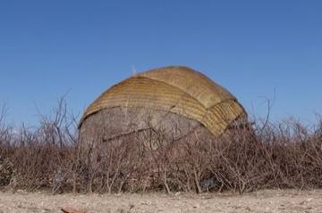
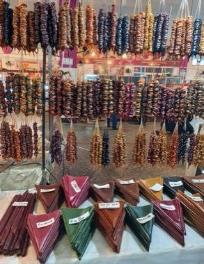
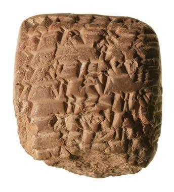
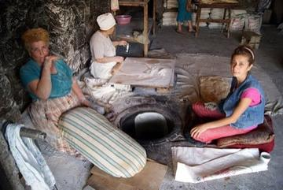
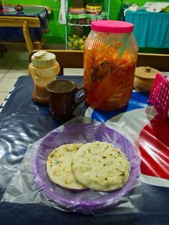
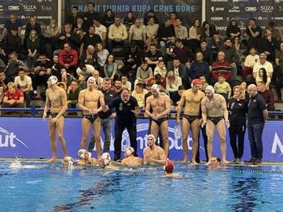

Living Traditions 256

Adinkra Cloth Stamping
Ghana +1 · Crafts and making
Adire indigo resist dyeing
Nigeria · Crafts and making
Agaseke basket weaving
Rwanda · Crafts and making
Ajrak block printing
Pakistan · Crafts and making
Al Talli Braid Embroidery
United Arab Emirates · Crafts and making
Al-Qatt Al-Asiri Wall Painting
Saudi Arabia · Crafts and making
Alebrije painting
Mexico · Crafts and making
Allo nettle fibre weaving
Nepal · Crafts and making
Amazigh Rug Weaving
Morocco · Crafts and making
Ambalangoda mask carving
Sri Lanka · Crafts and making
Antaimoro flower paper
Madagascar · Crafts and making
Aqal Somali
Somalia · Crafts and making
Aranmula metal mirror
Worldwide · Crafts and making
Asafo Flag Appliqué
Ghana · Crafts and making
Azulejo tile painting
Portugal · Crafts and making
Badgir windcatcher cooling puzzle
Iran · Crafts and making
Bahamian Straw Plaiting
Bahamas · Crafts and making
Baleada Stand
Honduras · Crafts and making
Bamboo scaffold builder
China · Crafts and making
Bamileke beadwork designer
Cameroon · Crafts and making
Bamum script writer
Cameroon · Crafts and making
Bandhani tie-dye
India · Crafts and making
Banig mat weaving
Philippines · Crafts and making
Bankura terracotta horse
Bangladesh · Crafts and making
Basotho blanket pattern designer
Lesotho · Crafts and making
Batik wax-resist pattern studio
Indonesia +1 · Crafts and making
Bedouin Coffee Pour
Jordan · Crafts and making
Beehive Panel Painter
Slovenia · Crafts and making
Belarusian straw weaving
Belarus · Crafts and making
Bequia Boat and Model Builder
Saint Vincent and the Grenadines · Crafts and making
Bidriware silver inlay
Worldwide · Crafts and making
Bilum looped string bag
Papua New Guinea · Crafts and making
Black Forest Cuckoo Clock Workshop
Germany · Crafts and making
Blacksmith's Forge
United Kingdom +4 · Crafts and making
Block printing
India · Crafts and making
Blue-and-white porcelain painting
Worldwide · Crafts and making
Bo Sang umbrella painting
Thailand · Crafts and making
Bobbin lace making
Belgium · Crafts and making
Bogolan mud cloth
Mali · Crafts and making
Bojagi
South Korea · Crafts and making
Bolesławiec Stamped Pottery
Poland · Crafts and making
Bolga Basket Weaver
Ghana · Crafts and making
Botswana coil basket weaving
Worldwide · Crafts and making
Buganda barkcloth making
Uganda · Crafts and making
Bulgarian Painted Pottery
Bulgaria · Crafts and making
Burmese lacquerware engraving
Myanmar · Crafts and making
Caballito de totora
Peru · Crafts and making
Cantonese opera role maker
Worldwide · Crafts and making
Capulana wrap cloth printing and tying
Mozambique · Crafts and making
Celtic knot weave
Ireland +1 · Crafts and making
Chamba rumal embroidery
India · Crafts and making
Channapatna lacquer toys
Worldwide · Crafts and making
Chechia Felt-Cap Workshop
Tunisia · Crafts and making
Cheongsam Tailor Shop
China · Crafts and making
Chikankari white-on-white embroidery
Worldwide · Crafts and making
Chinampa Gardens
Mexico · Crafts and making
Chinese knotting
China · Crafts and making
Chorreador
Costa Rica · Crafts and making
Churchkhela
Georgia · Crafts and making
Čičmany House Ornament Painting
Slovakia · Crafts and making
Clinker Boat Building
Norway +2 · Crafts and making
Cloisonne
China · Crafts and making
Costa Rican painted oxcart
Costa Rica · Crafts and making
Cross-Stitch Pattern Weaving
Ukraine · Crafts and making
Cuneiform Clay Tablet Scribe
Iraq · Crafts and making
Dahomey Appliqué Panel Studio
Benin · Crafts and making
Dakar Car Rapide Livery Painter
Senegal · Crafts and making
Dala Horse Painting
Sweden · Crafts and making
Damascus Mother-of-Pearl Inlay
Syria · Crafts and making
Dara
Nigeria +1 · Crafts and making
Dhaka rickshaw art
Bangladesh · Crafts and making
Dhaka weave pattern loom
Nepal · Crafts and making
Dhokra lost-wax casting
Bangladesh · Crafts and making
Dinka beaded corset beadwork
South Sudan · Crafts and making
Dogon Granary Builder
Mali · Crafts and making
Dorze cotton weaving
Ethiopia · Crafts and making
Dots and Boxes
France · Crafts and making
Dry Stone Wall Builder
Croatia +4 · Crafts and making
Dumpling Pleating
China +2 · Crafts and making
Ebru paper marbling
Turkey · Crafts and making
Faso Dan Fani Strip Weaving
Burkina Faso · Crafts and making
Furoshiki
Japan · Crafts and making
Gallarija Balcony Builder
Malta · Crafts and making
Gambian Oyster Harvest
Gambia · Crafts and making
Gargoor Fish-Trap Weaving
Bahrain · Crafts and making
Giant Barriletes
Guatemala · Crafts and making
Glassblowing
Italy · Crafts and making
Goryeo Celadon Inlay
South Korea +1 · Crafts and making
Gulf Dhow Hull Builder
Qatar · Crafts and making
Haapsalu lace shawl knitting
Estonia · Crafts and making
Haitian Oil-Drum Metal Cut-Out Art
Haiti · Crafts and making
Hardanger embroidery
Norway · Crafts and making
Hmong story cloth
China +3 · Crafts and making
Hong Kong Milk Tea Pulling
China · Crafts and making
Horezu ceramics
Romania · Crafts and making
Ice Canoe Race
Canada · Crafts and making
Ikat Pattern Dyeing
Uzbekistan · Crafts and making
Ikebana
Japan · Crafts and making
Ikpu Ite Coil Pot
Nigeria · Crafts and making
Imigongo geometric painting
Rwanda · Crafts and making
Irish Handball
Ireland · Crafts and making
Iznik tile painting
Turkey · Crafts and making
Jaapi weaving
India · Crafts and making
Jaipur blue pottery painting
India · Crafts and making
Jamdani muslin weaving
Bangladesh · Crafts and making
Jangada Sailing
Brazil · Crafts and making
Jebena coffee brewing
Ethiopia +1 · Crafts and making
Jeepney painting
Philippines · Crafts and making
Jordanian Sand Bottle Art
Jordan · Crafts and making
Kalamkari pen painting
Worldwide · Crafts and making
Kalocsa floral painting
Hungary · Crafts and making
Kanga cloth design
Kenya · Crafts and making
Kantha running-stitch quilt
Bangladesh · Crafts and making
Karesansui
Japan · Crafts and making
Kashmiri papier-mache painting
India · Crafts and making
Keffiyeh Pattern Loom
Palestine · Crafts and making
Kente strip weaving
Ghana · Crafts and making
Ketupat
Malaysia +2 · Crafts and making
Khatam inlay star pattern workshop
Iran · Crafts and making
Khayamiya Tentmaker Applique
Egypt · Crafts and making
Khinkali dumpling pleating
Georgia · Crafts and making
Khokhloma Pattern Painting
Russia · Crafts and making
Kiondo basket weaving
Kenya · Crafts and making
Kira and Kushuthara backstrap weaving
Bhutan · Crafts and making
Kisii soapstone carving
Worldwide · Crafts and making
Kissi Penny Forging
Guinea +2 · Crafts and making
Kokeshi doll painting
Japan · Crafts and making
Kondapalli village toys
Worldwide · Crafts and making
Korhogo Painted Cloth Studio
Cote d'Ivoire · Crafts and making
Krobo Powder-Glass Beads
Ghana · Crafts and making
Kuba cloth pattern puzzle
DR Congo · Crafts and making
Kumihimo Braid Disk
Japan · Crafts and making
Kumiko lattice
Japan · Crafts and making
Kurpie Layered Paper Cutting
Poland · Crafts and making
Lake Chad reed boat builder
Chad · Crafts and making
Lamian
China · Crafts and making
Lao silk brocade weaving
Laos · Crafts and making
Lavash Baking
Armenia · Crafts and making
Leaded Glass Window Making
Japan · Crafts and making
Lefkara Lace
Cyprus · Crafts and making
Lei making
United States · Crafts and making
Licitar Heart Decorator
Croatia · Crafts and making
Lielvārde Sash Pattern Weaving
Latvia · Crafts and making
Lippan kaam mud-and-mirror relief
India +1 · Crafts and making
Lost-Wax Bronze Casting
Japan +2 · Crafts and making
Luk chup
Thailand · Crafts and making
Lukasa memory board pattern game
Worldwide · Crafts and making
Luzzu Boat Painter
Malta · Crafts and making
Macau Portuguese Custard Tart Bake
Portugal +1 · Crafts and making
Maedeup
South Korea · Crafts and making
Makonde ebony carving
Tanzania +1 · Crafts and making
Malagasy lamba silk weaving
Worldwide · Crafts and making
Maldivian lacquer work
Maldives · Crafts and making
Maple taffy on snow
Canada · Crafts and making
Masaya Hammock Weaving
Nicaragua · Crafts and making
Masi bark-cloth stencil printing
Fiji · Crafts and making
Mate Pouring
Argentina · Crafts and making
Matryoshka
Russia · Crafts and making
Mehndi henna pattern drawing
India +1 · Crafts and making
Mesob basket weaving
Ethiopia · Crafts and making
Mithila folk painting
Nepal +1 · Crafts and making
Moldovan Woven Carpet Pattern Studio
Moldova · Crafts and making
Mongol bichig
Mongolia · Crafts and making
Mud Plaster Season
Mali · Crafts and making
Mudhif reed-arch house
Iraq · Crafts and making
Muqarnas stalactite vault builder
Iran · Crafts and making
Murga Uruguaya Carnival Troupe
Uruguay · Crafts and making
Nabulsi Soap Tower
Palestine · Crafts and making
Nakshi Kantha embroidery
Bangladesh · Crafts and making
Nanduti
Paraguay · Crafts and making
Ndebele geometric wall painting
South Africa · Crafts and making
Neon sign bender
China · Crafts and making
Nerikiri wagashi sculpting
Japan · Crafts and making
Ngatu bark-cloth pattern rubbing
Tonga · Crafts and making
Nordic Colourwork Knitting
United Kingdom +2 · Crafts and making
Nubian house painting
Egypt · Crafts and making
Ohrid Pearl Maker
North Macedonia · Crafts and making
Oil-paper umbrella making
China · Crafts and making
Omani Khanjar Silver Filigree
Oman · Crafts and making
Oualata Wall Painting
Mauritania · Crafts and making
Pakistani truck art
Pakistan +1 · Crafts and making
Palauan storyboard carving
Palau · Crafts and making
Palm sugar boiling and mould-filling
Cambodia · Crafts and making
Pamiri House Ceiling Raiser
Tajikistan · Crafts and making
Pandanus mat plaiting
Kiribati · Crafts and making
Panu di Pinti Weaving
Guinea-Bissau · Crafts and making
Paper Fortune Teller
United Kingdom +3 · Crafts and making
Paper Plane Flight Contest
Japan · Crafts and making
Paper Soccer
Poland +2 · Crafts and making
Penghu Stone Weir Tide Puzzle
Taiwan · Crafts and making
Peranakan beaded slippers
China +1 · Crafts and making
Perfumer's Organ
Worldwide · Crafts and making
Persian Carpet Knotting
Iran +1 · Crafts and making
Persian garden layout puzzle
Iran · Crafts and making
Petrykivka painting
Ukraine · Crafts and making
Phuang malai flower garland threading
Thailand · Crafts and making
Phulkari darn-stitch embroidery
India +1 · Crafts and making
Pirot Kilim Weaver
Serbia · Crafts and making
Plis Cap Felter
Albania +1 · Crafts and making
Pollera and Tembleques
Panama · Crafts and making
Pupusa Maker
El Salvador · Crafts and making
Qamariya Gypsum Window Designer
Yemen · Crafts and making
Ralli patchwork quilt
Pakistan +1 · Crafts and making
Rishtan ceramics
Uzbekistan · Crafts and making
Rosemaling
Norway · Crafts and making
Sadu Bedouin ground-loom weaving
Jordan · Crafts and making
Sailor's Knotwork and Turk's Head
Worldwide · Crafts and making
São Tomé cocoa and chocolate maker
Sao Tome and Principe · Crafts and making
Sashiko Stitch Patterns
Japan · Crafts and making
Seal carving
China · Crafts and making
Shibam Mud-Brick Tower Builder
Yemen · Crafts and making
Shibori Indigo Fold
Japan +1 · Crafts and making
Shital pati cool mat weaving
Bangladesh · Crafts and making
Sholapith flower carving
Bangladesh · Crafts and making
Shona stone sculpture carving
Zimbabwe · Crafts and making
Shophouse facade builder
Singapore +2 · Crafts and making
Sicilian Cart Painting
Italy · Crafts and making
Sierra Leone Country Cloth Strip Loom
Sierra Leone · Crafts and making
Slutsk Sash Weaving
Belarus · Crafts and making
Songket
Malaysia +2 · Crafts and making
Sprouts
United Kingdom · Crafts and making
Sri Lankan batik wax-resist painting
Sri Lanka · Crafts and making
Stamp Designer and Perforator
Liechtenstein · Crafts and making
Stilt-village builder
Brunei +1 · Crafts and making
Suzani embroidery
Uzbekistan +1 · Crafts and making
Suzhou silk embroidery
China · Crafts and making
Swahili carved door
Kenya · Crafts and making
Swazi carved figures and craft market
Eswatini · Crafts and making
Tais
Timor-Leste · Crafts and making
Takienta Tower-House Builder
Togo · Crafts and making
Talavera tile painting
Mexico · Crafts and making
Tamburello
Italy +1 · Crafts and making
Tanghua
China · Crafts and making
Tap-Tap Bus Painting
Haiti · Crafts and making
Tarakasi silver filigree
Worldwide · Crafts and making
Tartan Sett Weaving
United Kingdom +1 · Crafts and making
Tatreez Palestinian Cross-Stitch
Palestine +1 · Crafts and making
Temari Thread-Ball Patterns
Japan · Crafts and making
Tessellated Mosaic Making
Italy +1 · Crafts and making
Thai fruit and vegetable carving
Thailand · Crafts and making
Tiebele House Painting
Burkina Faso · Crafts and making
Timorese coffee cherry harvest and sort
Timor-Leste · Crafts and making
Tingatinga painting
Tanzania · Crafts and making
Toquilla straw hat weaving
Ecuador · Crafts and making
Tuareg Tea
Niger · Crafts and making
Turkish coffee in the cezve
Turkey · Crafts and making
Turkmen gul carpet
Turkmenistan · Crafts and making
Turkmen Silver Jewelry Designer
Turkmenistan · Crafts and making
Ukiyo-e Woodblock Printing
Japan · Crafts and making
Valley Tonga coil pottery
Tonga +1 · Crafts and making
Warli painting
India · Crafts and making
Water Polo Sprint
Montenegro · Crafts and making
Welsh Love Spoon Carving
United Kingdom · Crafts and making
Wire car
Worldwide · Crafts and making
Zellij tile mosaic
Morocco · Crafts and making
Zulu beadwork letters
South Africa · Crafts and making